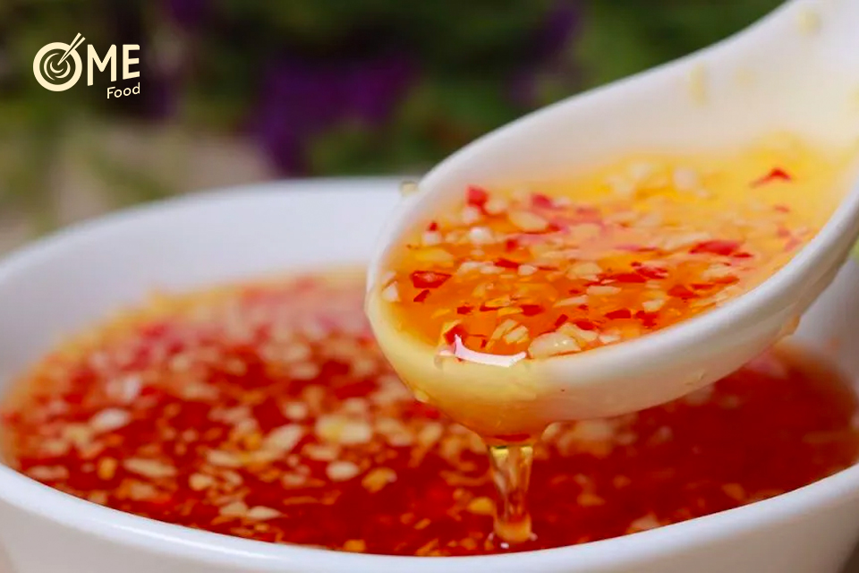
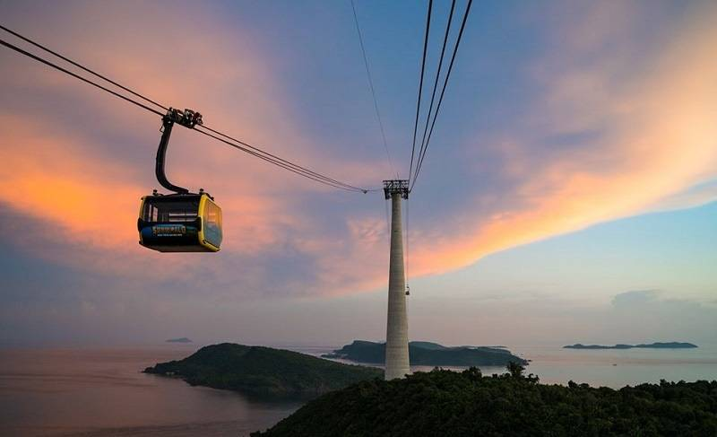
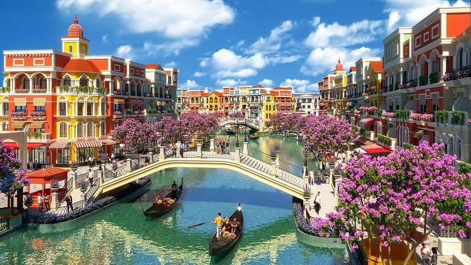

Vị trí địa lý
Phú Quốc là một hòn đảo lớn thuộc tỉnh Kiên Giang, nằm ở biển Tây (Gulf of Thailand) ngoài khơi phía tây nam Việt Nam. Vị trí của đảo khiến nó vừa mang nét giao thoa vùng biển quốc tế, vừa là điểm tập trung du lịch, cảng và hải hành quan trọng.

Góc nhìn toàn cảnh của Đảo Phú Quốc
Địa hình
Địa hình Phú Quốc đa dạng: rừng và đồi nhỏ ở nội địa, thoải ra các đồng bằng ven biển và bãi cát dài. Sự kết hợp rừng nguyên sinh — bờ biển — rạn san hô làm đảo nổi bật so với nhiều địa điểm du lịch khác.

Ảnh rừng núi của Đảo Phú Quốc
Khí hậu
Phú Quốc có khí hậu nhiệt đới gió mùa — mùa khô từ cuối năm tới đầu năm là thời điểm lý tưởng cho du lịch biển, còn mùa mưa (giữa/ cuối năm) có mưa nhiều và biển động hơn.

Góc nhìn từ Đảo Phú Quốc ra biển
Văn hoá
Văn hóa ở đây đậm nét biển: lễ hội cầu ngư, tín ngưỡng thờ cá Ông, cùng truyền thống làm nước mắm và đời sống làng chài tạo nên bản sắc riêng, thu hút du khách muốn tìm hiểu văn hóa địa phương.

Ảnh chợ đêm Phú Quốc
Con người
Người dân đảo thường hiền hòa, gắn bó với nghề biển; sinh hoạt hàng ngày chịu ảnh hưởng lớn từ thủy triều và mùa vụ, nhiều hộ vừa đánh bắt vừa tham gia dịch vụ du lịch để tăng thu nhập.

Ảnh các thuyền gần biển
Phong tục
Phong tục ở đảo nghiêng về đời sống biển: từ tập quán lao động, nghi lễ cầu ngư đến nghề làm nước mắm — tất cả tạo nên văn hóa sinh hoạt rất đặc thù chỉ có ở các làng chài đảo.

Muỗng múc nước mắm cay từ chén
Hoạt động
Phú Quốc mang đến nhiều hoạt động du lịch đa dạng, phù hợp với nhiều đối tượng khách du lịch từ nghỉ dưỡng đến khám phá lẫn những người ưa trải nghiệm và vận động ngoài trời.

Ảnh một vài người tắm trên suối Tranh Phú Quốc
Một số hoạt động du lịch phổ biến tại Phú Quốc:
- Lặn biển ngắm san hô, khám phá hệ sinh thái biển
- Tham quan các đảo nhỏ xung quanh bằng cano
- Tắm biển, dạo biển và ngắm hoàng hôn
- Tham quan làng nghề truyền thống như làm nước mắm, trồng tiêu
- Tham gia các tour tham quan rừng, suối và vườn quốc gia
Trải nghiệm du lịch
Không chỉ dừng lại ở các hoạt động thông thường, Phú Quốc còn mang đến những trải nghiệm đặc biệt, tạo ấn tượng sâu sắc và khó quên cho du khách khi đến tham quan.

Ảnh hoàng hôn trên cáp treo Hòn Thơm
Một số trải nghiệm nổi bật tại Phú Quốc:
- Đi cáp treo vượt biển
- Trải nghiệm cuộc sống của ngư dân địa phương
- Nghỉ dưỡng tại các resort ven biển, hòa mình vào không gian yên bình
- Khám phá vẻ đẹp hoang sơ của các đảo nhỏ và bãi biển ít người
Địa điểm tham quan

Ảnh phong cảnh Grand World Phú Quốc
Phú Quốc thực sự là thiên đường biển đảo với những bãi tắm mang vẻ đẹp riêng biệt, đáp ứng mọi sở thích của du khách. Nếu bạn tìm kiếm sự thư giãn tuyệt đối, bãi Sao với bờ cát trắng mịn, nước nông và bãi Khem yên tĩnh với hình cánh cung quyến rũ là lựa chọn hoàn hảo để đắm mình trong làn nước sạch trong. Với những ai yêu thích khám phá và "sống ảo", bãi Rạch Vẹm – "vương quốc sao biển" – sẽ mang đến trải nghiệm độc đáo giữa thiên nhiên hoang sơ, trong khi bãi Dài lại là sự kết hợp thú vị giữa vẻ đẹp tự nhiên và các khu vui chơi giải trí sôi động. Cuối cùng, đừng bỏ lỡ bãi Trường, bãi biển dài nhất đảo, nơi bạn có thể tản bộ trên dải cát dài 20km và chiêm ngưỡng khung cảnh hoàng hôn rực rỡ nhất Phú Quốc.